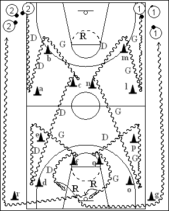

Catégorie : DRIBBLE (Dr-008)
Déroulement
- Les joueurs possèdent un ballon et sont disposés sur deux files aux extrémités d’une baseline.
- Le premier joueur de la file 1 effectue successivement : dribble de la main gauche jusqu’à hauteur du cône l, back dribble toujours de la main gauche jusqu’au cône m, changement de direction et de main jusqu’au cône n, changement de direction et de nouveau dribble main gauche jusqu’à hauteur du cône o, back dribble main gauche jusqu’au cône p, nouveau changement de direction et départ en dribble main droite vers le cône q, dernier changement de direction et lay-up main gauche. Dans le même temps, le premier joueur de la file 2 effectue le même trajet vers les cônes a, b, c, d, e et f chaque fois avec la main opposée au premier joueur de la file 1 et en terminant par un jump shoot (et non un lay-up). Les suivants démarrent quand les premiers sont arrivés aux cônes p (1) et e (2).
- Chaque joueur effectue son rebond et change de file, 1 en passant derrière le cône r et 2 en contournant le cône g.
Coaching points
- Soigner particulièrement le back dribble en protection, ce qui est une arme très intéressante.
- Varier les types de changements de directions.